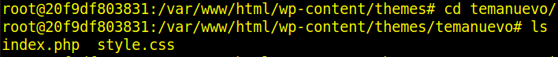
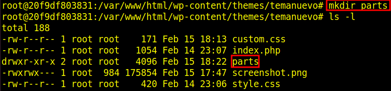
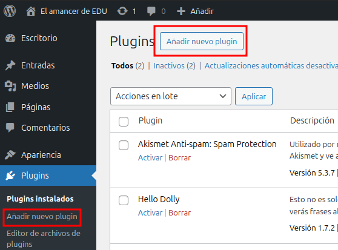
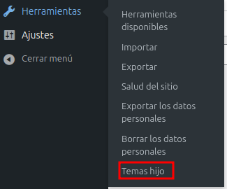

Práctica 4.1 Tema WP desde cero
Parte 1: Configuración del entorno
1.Descargamos e Instalamos WordPress con Docker
En lugar de instalar WordPress manualmente, utilizaremos **Docker para crear un entorno de desarrollo aislado.**
Paso 1: Instalamos Docker y Docker Compose
sudo apt update
sudo apt install docker.io docker-compose -y
Verificamos que Docker está instalado correctamente
docker --version
docker-compose --version
Paso 2: Creamos el Archivo docker-compose.yml
Navegamos a nuestro directorio de trabajo y creamos un archivo docker-compose.yml
mkdir ~/wordpress-docker
cd ~/wordpress-docker
nano docker-compose.yml
✍ Contenido de docker-compose.yml:
version: '3.8'
services:
wordpress:
image: wordpress:latest
container_name: mi-wordpress
restart: always
ports:
- "8000:80"
environment:
WORDPRESS_DB_HOST: db
WORDPRESS_DB_USER: root
WORDPRESS_DB_PASSWORD: root
WORDPRESS_DB_NAME: mi_wp
volumes:
- ./wp-content:/var/www/html/wp-content
db:
image: mysql:5.7
container_name: mi-mysql
restart: always
environment:
MYSQL_ROOT_PASSWORD: root
MYSQL_DATABASE: mi_wp
volumes:
- db_data:/var/lib/mysql
volumes:
db_data:
Paso 3: Iniciamos los Contenedores
Ejecutamos el siguiente comando en la terminal dentro del directorio donde hemos creado docker-compose.yml
docker-compose up -d
Esto nos descargará las imágenes necesarias y nos creará dos contenedores: uno para WordPress y otro para MySQL
Paso 4: Accedemos a WordPress
Abrimos un navegador y visitamos
http://localhost:8000
Seguiremos el asistente de instalación de WordPress y usaremos estos datos
- Base de datos:
mi_wp - Usuario:
root - Contraseña:
root - Host de la base de datos:
db
Paso 5: Accederemos a la Carpeta del Tema
El código del tema se guardará en la carpeta wp-content dentro de tu directorio ~/wordpress-docker/wp-content/. Ahora puedes continuar con la creación del tema de WordPress dentro de esta carpeta
~/wordpress-docker/wp-content/themes/mi-tema-personalizado/
Paso 6: Abriremos el Proyecto en VS Code
code ~/wordpress-docker/wp-content/themes/mi-tema-personalizado
Parte 2: Creamos el Tema en WordPress
Paso 1: Accedemos al contenedor de WordPress
1.Listamos los contenedores en ejecución
docker ps
En nuestro caso, el nombre del contenedor es wordpress_wordpress_1
2. Accedemos al contenedor
Usamos el siguiente comando para acceder a una terminal dentro del contenedor
docker exec -it wordpress_wordpress_1 /bin/bash
Esto nos dará acceso a la terminal del contenedor de WordPress
Paso 2: Creamos la carpeta del tema
1. Navegamos al directorio de temas
Dentro del contenedor, los temas de WordPress se almacenan en la ruta
cd /var/www/html/wp-content/themes/
2. Creamos una carpeta para nuestro tema
mkdir temanuevo

3. Creamos los archivos básicos del tema
Dentro de la carpeta temanuevo, necesitaremos crear al menos dos archivos para que WordPress reconozca el tema
-
style.css: Define la información del tema. -
index.php: El archivo principal del tema.
cd temanuevo
touch style.css index.php


- 1. Editamos el archivo
style.css: Abrimos el archivostyle.cssy agregamos la información básica del tema. Por ejemplo:
Podemos ver el fichero.php aquí

- 2. Editamos el archivo
index.php:
Abrimos el archivo index.php y agregamos con un código básico para WordPress:
Podemos ver el fichero.php aquí
Paso 3: Activamos el tema en WordPress
-
Salimos del contenedor: Escribimos
exitpara salir de la terminal del contenedor. -
Accedemos a WordPress: Abrimos nuestro navegador y vamos a
http://localhost:8000/wp-admin. -
Activamos el tema:
- Vamos a Apariencia > Temas.
- Debemos ver nuestro tema
Mi Tema del Amaneceren la lista de temas disponibles. -
Hacemos clic en Activar para usar nuestro tema personalizado.
-
Verificamos:
- Accedemos al sitio web y comprobamos que el contenido del
index.phpse muestra correctamente.

Paso 4: Mejoramos el tema
1.Creamos un archivo screenshot.png
Creamos una imagen de 1200x900 píxeles que represente una vista previa del diseño de nuestro tema
Guardaremos esta imagen como screenshot.png en la carpeta temanuevo
docker cp /home/yo/Escritorio/Comparte/screenshot.png wordpress-wordpress-1:/var/www/html/wp-content/themes/temanuevo


2.Agregamos una hoja de estilos adicional custom.css
Creamos un nuevo archivo llamado custom.css en la carpeta temanuevo
mkdir custom.css

En este archivo, podemos agregar estilos personalizados para mejorar el diseño de tu tema
Vamos a modificar nuestro código para asegurarnos de que ambos archivos CSS (style.css y custom.css) se carguen correctamente
Código actualizado:
Podemos ver el fichero.css aquí
3.Para que WordPress cargamos este archivo, abrimos index.php y agregamos el siguiente código para cuando se carga style.css
<link rel="stylesheet" href="<?php echo get_stylesheet_directory_uri(); ?>/style.css">
<link rel="stylesheet" href="<?php echo get_stylesheet_directory_uri(); ?>/custom.css">
Entendemos que nuestro archivo PHP ya tiene una estructura básica de un tema de WordPress, pero queremos asegurarnos de que se carguen correctamente tanto style.css como custom.css
Vamos a modificar tu código para asegurarnos de que ambos archivos CSS (style.css y custom.css) se carguen correctamente
Código actualizado:
Podemos ver el fichero.php aquí
4. Creamos archivos en la carpeta parts/ para el encabezado y el pie de página
La carpeta parts/ nos permitirá organizar mejor nuestro código, separando el encabezado header.php y el pie de página footer.php en archivos independientes
Pasos:
1.Creamos una carpeta llamada parts dentro de la carpeta temanuevo

2.Dentro de parts/, creamos dos archivos:
-
header.php: Para el código del encabezado. -
footer.php: Para el código del pie de página.

3.Contenido de header.php:
Podemos ver el fichero.php aquí
4. Contenido de footer.php:
Podemos ver el fichero.php aquí
5. Añadimos header.php y footer.php en el fichero index.php:
Modifica tu archivo index.php para incluir estos archivos usando la función get_template_part() de WordPress:
<?php get_template_part('parts/footer'); ?>

Estructura final del tema


5. Desafío extra
Crearemos un tema hijo basado en otro tema existente
1. Nos vamos a Plugins>>añadir un nuevo plugin

2. En el buscador ponemos la palabra child theme, seleccionamos el que más nos guste, le damos a instalar y finalmente a activar


3. Verificamos que lo tenemos instalado y en Herramientas>>Temas hijo

4. Analizamos el tema padre

5. Normalmente no vamos a tocar NADA y le damos a Create New Child Theme en la parte inferior de esta sección


6. Hora solo nos falta activarlo en Apariencia>>Temas


Vemos la estructura de directorios y ficheros creada